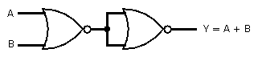

| Logic |
If all the inputs are 0 (LOW / FALSE), then output will be 0 (LOW / FALSE), otherwise the output will be 1 (HIGH / TRUE).
|
| Number of inputs/outputs |
Multiple inputs, Single output
|
| Logic Symbol |
+
e.g. \(Y = A + B\)
|
Logic Diagram
(For 2 inputs) |
|
Truth table
(For 2 inputs) |
| Inputs | Output |
| \(A\) | \(B\) | \(Y = A + B\) |
| 0 | 0 | 0 |
| 0 | 1 | 1 |
| 1 | 0 | 1 |
| 1 | 1 | 1 |
|
| Integrated Circuits |
| Number of Inputs |
IC Number |
| Two Inputs |
7432 |
| Three Inputs |
|
| Four Inputs |
|
|
| OR gate using universal gates |
Using NAND gates |

Using NOR gates |
|
| Related Video |
Click Here |